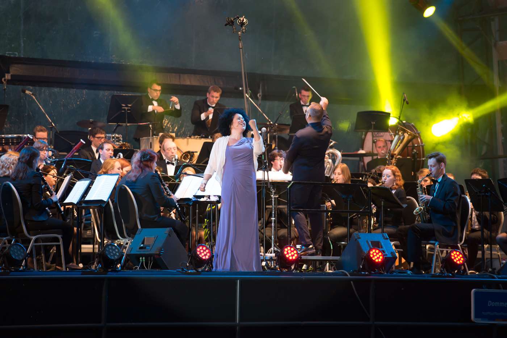
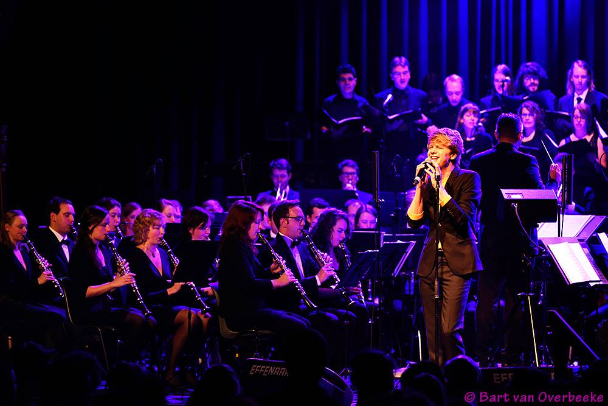

Quadrivium |
|||||||||||
|
|||||||||||
Organisatie |
|||||||||||
|
|||||||||||
Activiteiten |
|||||||||||
|
|||||||||||
voor Leden |
|||||||||||
|
|||||||||||
Contact |
|||||||||||
|
|||||||||||
Auletes
Quadrivium
Het harmonieorkest Auletes is de grootste ondervereniging van ESMG Quadrivium. Elk jaar staat er een gevarieerd en uitdagend repertoire op het programma, wat wordt uitgevoerd in diverse kleine en grote optredens.
Hieronder vind je meer informatie over Auletes, haar bezetting, de dirigent en de repetities. Wil je een keer vrijblijvend meespelen om kennis te maken? Of heb je vragen? Mail dan naar

Auletes tijdens Muziek op de Dommel 2015 met Tania Kross
Bezetting
Het harmonieorkest bestaat uit zo’n 50 muzikanten, maar voor bepaalde projectconcerten wordt het orkest soms aangevuld tot wel 80 musicerende studenten. Nieuwe muzikanten zijn altijd van harte welkom. Dit geldt voor blazers en slagwerkers, maar ook een contrabas en harp horen in de bezetting van een modern harmonieorkest.

Auletes tijdens Lustrumconcert "ffnaarClassic" op 5 maart 2015 in poppodium "de Effenaar" met Wouter Hamel
Repertoire
De muziek die Auletes repeteert en uitvoert is zeer gevarieerd, van de klassieke werken tot het lichtere repertoire van film- en musicalmuziek. De symfonische blaasmuziek neemt een speciale plek in het repertoire in. Mede door dit brede repertoire is het elk jaar weer een uitdaging om een muzikale topprestatie te leveren.
Om een indruk te krijgen van het repertoire in het verleden kun je eens rondkijken bij de links onder ‘concerten’.
Agenda
18 december 2015 - A Night with Rachmaninoff, Muziekgebouw Frits Philips Eindhoven
Repetities
Het harmonieorkest Auletes repeteert elke donderdagavond van 19.30 uur tot ongeveer 22.15 uur. De repetitie vindt plaats in de Qeuken (Bunker 1.69, Grote Muziekzaal). Speel je een instrument, kom dan gerust een keer langs en speel een keertje mee!
Dirigent

Paul van Gils
Biografie Paul van Gils
Paul van Gils werd geboren op 1 november 1990 in Boxtel. Hij groeide op in een muzikale familie. Vader Mari is beroepstrompettist, dirigent, componist/arrangeur. Op 8 jarige leeftijd begon Paul met trompetlessen bij de plaatselijke muziekschool. Later volgde hij privélessen bij Sjef Pijpers sr. Al tijdens zijn middelbare school studeerde Paul aan het conservatorium in Tilburg met hoofdvak trompet bij Raymond Vievermanns.
In 2009 startte hij aan het Conservatorium van Amsterdam met hoofdvakken trompet bij Theo Wolters en Hafabra-directie bij Danny Oosterman. Na twee jaar besloot Paul zich volledig te richten op het dirigeren van (blaas-)orkesten. In 2014 heeft Paul zijn bachelor examen, bekroond met het predicaat ‘zeer goed’, afgesloten. Naast Auletes heeft Paul op dit moment onder zijn leiding: Fanfare Eendracht Afferden, Fanfare Crescendo Elst en Harmonieorkest de Bazuin Oud-Beijerland.
Concerten
De uitvoeringen van Auletes bevatten altijd het jaarlijks terugkerend Quadrivium-concert, samen met de andere onderverenigingen. Verder heeft Auletes al meerdere avondvullende programma's verzorgd. Zie voor meer info:
5 MAART 2015 - LUSTRUMCONCERT FFNAARCLASSIC!
8-9 NOVEMBER 2014 - GLOW MUSIC
31 MEI - 1 JUNI 2014 - STUDENTEN MUZIEK OP DE DOMMEL
16 FEBRUARI 2014 - VERRASSENDE ONTMOETINGEN
15 DECEMBER 2013 - BLAZEN IN DE BEURS
24 NOVEMBER 2013 - VERRASSENDE ONTMOETINGEN
1-2 JUNI 2013 - MUZIEK OP DE DOMMEL
16 MAART 2013 - CARMINA BURANA
30 NOVEMBER 2012 - WINTERCONCERT
15 JUNI 2012 - AFSCHEID HARRY ROUMEN: OUVERTURE 1812
2 JUNI 2012 - FESTIVAL: MUZIEK OP DE DOMMEL
23 MEI 2012 - SLAGWERKCONCERT
1 MAART 2012 - 3TU.CONCERT
5 JUNI 2010 - LUSTRUMFESTIVAL 'MUZIEK OP DE DOMMEL'
11-13 DECEMBER 2009 - DRIETUCONCERTEN
18 APRIL 2009 - DIVINITY
30 MAART 2008 - WINDOWS OF THE WORLD
16 NOVEMBER 2007 - THE QUEEN SYMPHONY
JULI 2007- AULETES GOES ITALY
14 MEI 2006 - CARMINA BURANA
21 EN 22 DEC 2005 - KERSTCONCERTEN "A SWINKLING X-MAS"
9 APRIL 2005 - GUNS OR ROSES
15 MEI 2004 - LORD OF THE RINGS AND THE DANCE
12 APRIL 2003 - CINEMA CLASSICS
13 APRIL 2002 - MUSICAL MEMORIES